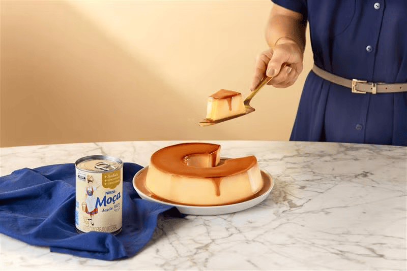

Um pouco mais sobre o Pudim
História do Pudim
Originada em Portugal, a sobremesa foi inventada por um abade português. Após sua morte, os ingredientes secretos foram revelados: açúcar, gemas, água e toucinho de porco faziam do Pudim de Priscos um sucesso absoluto.
No Brasil, o pudim se tornou uma sobremesa clássica, presente em qualquer tipo de evento. Extremamente popular, ganhou variações com chocolate, frutas e pão, sendo o pudim de leite condensado o preferido do coração dos brasileiros.
Como fazer o Pudim
Ingredientes da Calda
- 1 xícara (chá) de açúcar
- 1/2 xícara (chá) de água quente
Ingredientes do Pudim
- 1 lata (395g) de Leite Moça® (ou leite condensado)
- 2 medidas (da lata) de Leite Integral
- 3 ovos